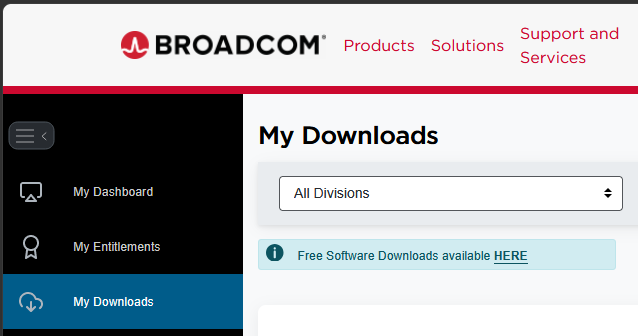
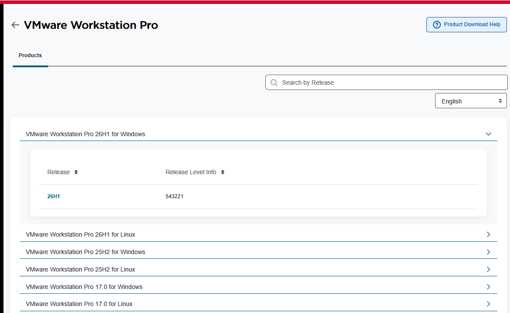
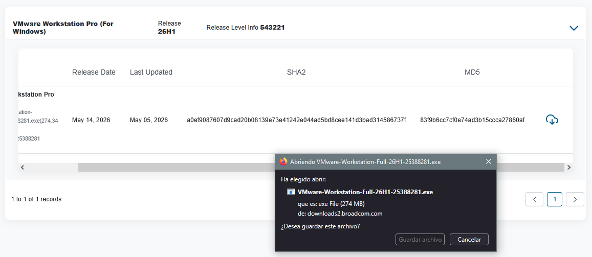
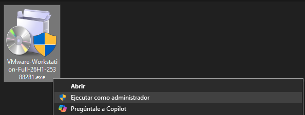
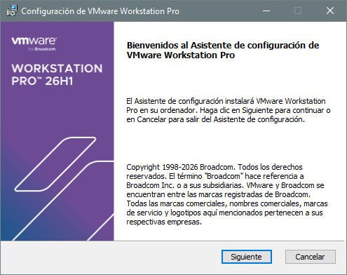
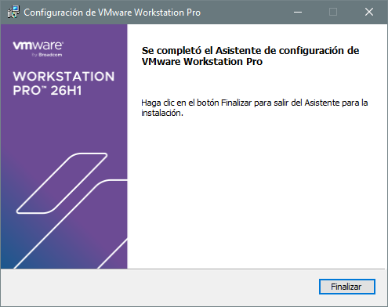

🖥️ VMware Workstation Pro
1. VMware
Software de virtualización que permite ejecutar uno o varios sistemas operativos (máquinas virtuales) dentro de tu sistema operativo principal, sin necesidad de particionar el disco ni reiniciar el equipo.
¿Para qué se usa en el aula?
- Practicar instalación y administración de sistemas operativos
- Probar configuraciones de red sin afectar al equipo real
- Realizar laboratorios de servidores (SSH, Apache, DNS, etc.)
- Aprender Linux sin riesgos
- Crear entornos de prueba aislados
2. Licencias
| Licencia | Precio | Uso | Snapshots | Red Virtual | Soporte | Descarga |
|---|---|---|---|---|---|---|
| Workstation Pro Personal ⭐ | Gratuito | Personal y educativo | ✅ | ✅ | ❌ | Descargar |
| Workstation Pro Comercial | Suscripción anual | Empresarial y profesional | ✅ | ✅ | ✅ | Descargar |
| Academic Program | Según convenio | Centros educativos | ✅ | ✅ | ✅ | — |
| Workstation Player | ~~Gratuito~~ | ~~Simplificado~~ | ❌ | ❌ | ❌ | ~~Descontinuado~~ |
3. Instalación
DESCARGAR
- Ve a Fusion and Workstation y haz clic en DOWNLOAD NOW
- Inicia sesión o crea una cuenta gratuita de Broadcom.
- Descargar el archivo
.exe. Para ello una vez iniciada sesión, en el menu seleccionamosMy Downloadsy despues enFree Software Downloads available HEREy buscamosVMware Workstation Pro, seleccionamos la última versión leemos y aceptamos los terminos y condiciones y descargamos el software.
 |
 |
 |
{kind=link}
{kind=link}
{kind=link}
INSTALACIÓN
Haz doble clic en el archivo descargado (ej. VMware-Workstation-Full-XX.X.X-XXXXXX.exe), sigue los pasos del asistente y elige las carpetas po defecto.
 |
 |
 |
{kind=link}
{kind=link}
{kind=link}
Una vez finalice abre el programa.
{kind=link}
Interfaz
| Elemento | Función |
|---|---|
| Panel izquierdo | Lista de todas tus máquinas virtuales |
| Barra de herramientas | Botones de encendido, pausa, snapshot, etc. |
| Área central | Pantalla de la máquina virtual activa |
| Barra de estado | Información de red, dispositivos USB, etc. |
| Atajo | Acción |
Ctrl + Alt |
Liberar el ratón/teclado de la VM |
Ctrl + Alt + Enter |
Pantalla completa |
Ctrl + Alt + P |
Pausar la VM |
Ctrl + Z |
Suspender la VM |
Ctrl + Shift + P |
Tomar snapshot |
https://www.youtube.com/watch?v=5lGB-zHPm-0&pp=ugUHEgVlcy1FUw%3D%3D
5. Creación de una VM
Para este manual vamos a crear una máquina virtual de Ubuntu Server 26, los pasos son exactamente los mismos para otras versiones.
Paso 1 — Descargar la ISO de Ubuntu Server
Ve a https://ubuntu.com/download/server, descarga la imagen ISO de Ubuntu Server 26.04 LTS y guarda el archivo .iso en una carpeta donde guardes todas las ISOS (ej. C:\ISOs\ubuntu-server.iso)
Paso 2 — Crear la nueva máquina virtual
Abre VMware Workstation Pro, haz clic en "Create a New Virtual Machine" o ve a Archivo → Nueva máquina virtual y selecciona "Typical (recommended)" → clic en Next
┌──────────────────────────────────────────────────┐
│ New Virtual Machine Wizard │
│ │
│ ○ Typical (recommended) ◄ ELEGIR ESTA │
│ ○ Custom (advanced) │
│ │
│ [Back] [Next] [Cancel] │
└──────────────────────────────────────────────────┘
Paso 3 — Seleccionar la ISO Selecciona "Installer disc image file (ISO)", haz clic en Browse y navega hasta tu archivo .iso de Ubuntu Server, VMware detectará automáticamente el sistema operativo → clic en Next
┌──────────────────────────────────────────────────┐
│ Guest Operating System Installation │
│ │
│ ○ Use a physical drive │
│ ● Installer disc image file (ISO): ◄ ELEGIR │
│ [C:\ISOs\ubuntu-server-25.04.iso] [Browse...] │
│ │
│ Detected: Ubuntu 64-bit │
│ [Back] [Next] [Cancel] │
└──────────────────────────────────────────────────┘
Paso 4 — Configurar usuario inicial (Easy Install) VMware puede ofrecerte la instalación rápida. Rellena:
| Campo | Valor recomendado |
|---|---|
| Full name | Tu nombre (ej. Alumno Informática) |
| User name | Un nombre de usuario corto (ej. alumno) |
| Password | Una contraseña segura |
💡 Recuerda estos datos, los necesitarás para iniciar sesión en Ubuntu Server.
Clic en Next.
Paso 5 — Nombre y ubicación de la VM
1. Virtual machine name: escribe Ubuntu Server 25.04 (o el nombre que prefieras)
2. Location: elige dónde guardar los archivos de la VM (necesitarás espacio suficiente)
3. Clic en Next
Paso 6 — Tamaño del disco virtual Se recomienda para un servidor de prácticas:
| Parámetro | Valor recomendado |
|---|---|
| Tamaño | 20 GB mínimo (40 GB ideal) |
| Tipo | Store virtual disk as a single file |
┌──────────────────────────────────────────────────┐
│ Specify Disk Capacity │
│ │
│ Maximum disk size (GB): [ 20.0 ] │
│ │
│ ○ Store virtual disk as a single file ◄ ESTE │
│ ○ Split virtual disk into multiple files │
│ │
│ [Back] [Next] [Cancel] │
└──────────────────────────────────────────────────┘
Clic en Next.
Paso 7 — Revisar y personalizar hardware Antes de finalizar, haz clic en "Customize Hardware..." para ajustar los recursos:
| Recurso | Valor recomendado para prácticas |
|---|---|
| Memory (RAM) | 2048 MB (2 GB) mínimo |
| Processors | 2 núcleos virtuales |
| Network Adapter | NAT (acceso a Internet por defecto) |
| CD/DVD | Verificar que apunta a la ISO correcta |
Cierra la ventana de hardware → clic en Finish.
Paso 8 — Instalación de Ubuntu Server La VM arrancará automáticamente desde la ISO. Sigue el asistente de instalación:
8.1 Selección de idioma
Select your language:
[ English ]
[ Español ] ◄ Puedes elegir Español
8.2 Actualización del instalador - Si te pregunta si actualizar el instalador, elige "Continue without updating" para ahorrar tiempo.
8.3 Configuración de teclado
- Layout: Spanish / Spanish
8.4 Tipo de instalación - Selecciona "Ubuntu Server" (opción estándar)
8.5 Configuración de red - Normalmente se configura automáticamente por DHCP - Verifica que aparece una IP asignada y continúa
8.6 Configuración de proxy - Déjalo en blanco si no hay proxy → Done
8.7 Mirror de Ubuntu - Usa el mirror por defecto → Done
8.8 Particionado de disco
Storage configuration:
● Use an entire disk ◄ ELEGIR ESTA
○ Custom storage layout
8.9 Configuración del perfil de usuario
| Campo | Ejemplo |
|---|---|
| Your name | Alumno Informática |
| Your server's name | ubuntu-server |
| Pick a username | alumno |
| Password | TuContraseñaSegura |
8.10 OpenSSH (recomendado) - Marca ✅ "Install OpenSSH server" — te permitirá conectarte por SSH
8.11 Featured server snaps - Para prácticas básicas, no selecciones nada → Done
8.12 Instalación - Espera a que se instale el sistema (5-15 minutos según el equipo) - Cuando aparezca "Installation complete!" → clic en "Reboot Now"
Paso 9 — Primer arranque de Ubuntu Server
- La VM reiniciará y expulsará la ISO automáticamente
- Aparecerá el prompt de login:
ubuntu-server login: alumno
Password: ********
- Si el login es correcto, verás:
Welcome to Ubuntu 25.04 LTS (GNU/Linux 6.x.x-xx-generic x86_64)
alumno@ubuntu-server:~$
Paso 10 — Primeros comandos útiles
sudo apt update && sudo apt upgrade -y # Actualizar el sistema
ip addr show # Ver la IP de la máquina virtual
df -h # Comprobar espacio en disco
lsb_release -a # Ver la versión de Ubuntu instalada
sudo poweroff # Apagar la máquina virtual de forma segura
6. Operaciones básicas con la máquina virtual
Encender / Apagar / Pausar
| Acción | Cómo hacerlo |
|---|---|
| Encender | Botón ▶ verde en la barra de herramientas |
| Apagar | VM → Power → Shut Down Guest |
| Suspender | VM → Suspend (guarda el estado en RAM) |
| Pausar | VM → Pause |
| Reiniciar | VM → Power → Restart Guest |
Snapshots (Instantáneas)
Los snapshots son una de las funciones más útiles de VMware. Guardan el estado completo de la VM en un momento determinado.
VM con snapshot = "punto de guardado" del sistema
Crear un snapshot:
1. VM → Snapshot → Take Snapshot...
2. Escribe un nombre descriptivo (ej. "Instalación limpia")
3. Clic en Take Snapshot
Restaurar un snapshot:
1. VM → Snapshot → Snapshot Manager
2. Selecciona el snapshot deseado
3. Clic en Go To → confirma
💡 Consejo: Toma siempre un snapshot justo después de instalar el sistema y antes de hacer cambios importantes. Si algo falla, puedes volver atrás en segundos.
Configurar la red de la VM
VMware ofrece 3 modos de red principales:
| Modo | Descripción | Uso recomendado |
|---|---|---|
| NAT | La VM comparte la IP del host. Tiene acceso a Internet | Uso general y descargas |
| Bridged | La VM aparece como un equipo más en la red física | Laboratorios de red |
| Host-only | Solo comunica la VM con el equipo host, sin Internet | Entornos aislados |
Para cambiar: VM → Settings → Network Adapter → Tipo de red
7. Consejos y buenas prácticas
✅ Toma un snapshot antes de cualquier práctica destructiva
✅ Asigna solo los recursos que necesitas — no pongas 8 GB de RAM a una VM si tu equipo solo tiene 8 GB en total
✅ Apaga las VMs cuando no las uses — consumen CPU y RAM incluso en reposo
✅ Guarda las ISOs en una carpeta organizada para reutilizarlas
✅ Usa nombres descriptivos para tus VMs:
Ubuntu-Server-Practica1es mejor queNueva VM⚠️ No suspendas el equipo host con VMs encendidas sin pausarlas antes
⚠️ No muevas o renombres los archivos
.vmdkfuera de VMware o la VM dejará de funcionar
Recursos
- Descarga VMware Workstation Pro
- Documentación oficial VMware
- Documentación Ubuntu
- Foros VMware (comunidad)
Manual elaborado para uso académico · VMware Workstation Pro (versión gratuita personal) · Ubuntu Server 25.04